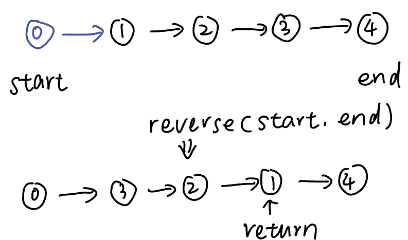

LinkedList
Basis
class ListNode(object):
def __init__(self, val, next=None):
self.val = val
self.next = next
- head = [ ]
- only 1 item
- odd and even
Fast & Slow Pointer
Template
用来找中点和环
fast = slow = head
while fast and fast.next:
fast = fast.next.next
slow = slow.next
return slow
* -> (*) -> * or * -> * -> (*) -> *
What I have done
19. Remove Nth Node From End of List
24. Swap Nodes in Pairs
Template
找环的起始点
fast = slow = head
while fast and fast.next:
fast = fast.next.next
slow = slow.next
if fast == slow:
slow = head
while slow != fast:
slow = slow.next
fast = fast.next
return slow
What I have done
142. Linked List Cycle II
🌟287. Find the Duplicate Number转化为linkedlist
Dummy Head
Template
dummy_head = ListNode(next=head)
current = dummy_head
while current.next:
return dummy_head.next
What I have done
21. Merge Two Sorted List
203. Remove Linked List Elements
Reverse LinkedList
Template
reverse nodes between [start + 1, end - 1], return node on (end - 1)

def reversek(self, start, end):
pre, cur = start, start.next
first = cur
while cur != end:
nxt = cur.next
cur.next = pre
pre = cur
cur = nxt
start.next = pre
first.next = cur
return start
What I have done
25. Reverse Nodes in k-Group
206. Reverse Linked List
Merge LinkedList
Template
def merge(list1, list2):
while list2 and list2.next:
next = list1.next
list1.next = list2
list1 = list2
list2 = next
What I have done
Palindrome Linked List
What I have done
Other
What I have done
23. Merge k Sorted Lists LinkedList + Heap
141. Linked List Cycle
206. Reverse Linked List
445. Add Two Numbers II
707. Design Linked List